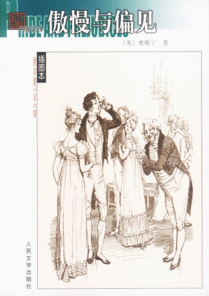

Introduction
————《傲慢与偏见》

《傲慢与偏见》是英国作家简·奥斯汀所创作的长篇小说，于1993年7月由人民文学出版社出版,该书以男女主人公达西和伊丽莎白由于傲慢和偏见而产生的爱情纠葛为线索，共写了四起姻缘：伊丽莎白与达西、简与宾利、莉迪亚与威克姆、夏洛蒂与柯林斯。小说运用喜剧的手法表达对生活的严肃批评，探索女主人公从恋爱到结婚中自我发现的心理过程，生动地反映了18世纪末到19世纪初处于保守和闭塞状态下的英国乡镇生活和世态人情。
小说描写了小乡绅班纳特五个待字闺中的千金，主角是二女儿伊丽莎白。 她在舞会上认识了达西，但是耳闻他为人傲慢，一直对他心生排斥，经历一番周折，伊丽莎白解除了对达西的偏见，达西也放下傲慢，有情人终成眷属。
这部作品以日常生活为素材，一反当时社会上流行的感伤小说内容和矫揉造作的写作方法，生动地反映了18世纪末到19世纪初处于保守和闭塞状态下的英国乡镇生活和世态人情。 并多次被改编成电影和电视剧。 小乡绅班纳特有五个 待字闺中 的 千金 ，班纳特太太整天操心着为女儿们物色称心如意的丈夫。 新来的邻居宾利（Bingley）是个有钱的 单身汉 ，他立即成了班纳特太太追猎的目标。